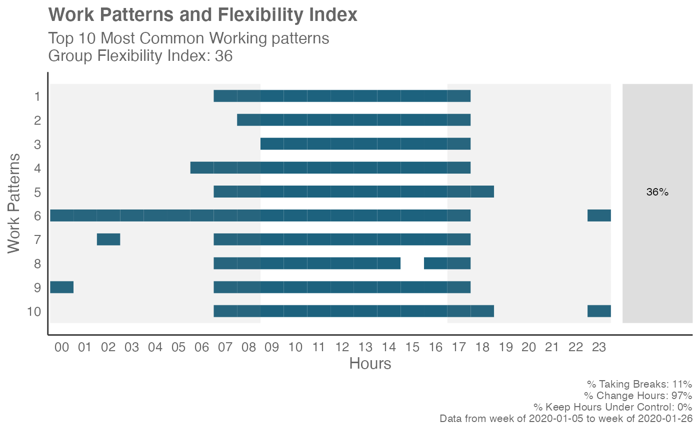
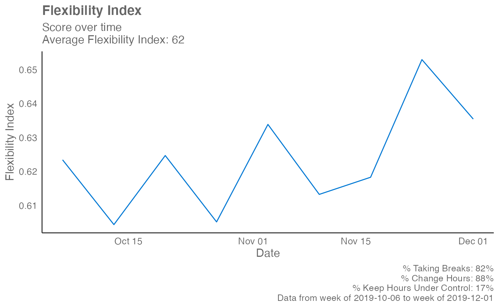

Compute a Flexibility Index based on the Hourly Collaboration Query
Source:R/flex_index.R
flex_index.Rd![[Experimental]](figures/lifecycle-experimental.svg)
Pass an Hourly Collaboration query and compute a Flexibility Index for the entire population. The Flexibility Index is a quantitative measure of the freedom for employees to work at a time of their choice.
flex_index( data, hrvar = NULL, signals = c("email", "IM"), active_threshold = 0, start_hour = "0900", end_hour = "1700", return = "plot", plot_method = "common" )
Arguments
| data | Hourly Collaboration query to be passed through as data frame. |
|---|---|
| hrvar | A string specifying the HR attribute to cut the data by. Defaults to NULL. This only affects the function when "table" is returned. |
| signals | Character vector to specify which collaboration metrics to
use: You may use "email" for emails only, "IM" for Teams messages only, or
a combination of the two |
| active_threshold | A numeric value specifying the minimum number of signals to be greater than in order to qualify as active. Defaults to 0. |
| start_hour | A character vector specifying starting hours, e.g. "0900" |
| end_hour | A character vector specifying end hours, e.g. "1700" |
| return | String specifying what to return. This must be one of the following strings:
See |
| plot_method | Character string for determining which plot to return.
|
Value
A different output is returned depending on the value passed to the return
argument:
"plot": 'ggplot' object. A random of ten working patterns are displayed, with diagnostic data and the Flexibility Index shown on the plot."data": data frame. The original input data appended with the Flexibility Index and the component scores. Can be used withplot_flex_index()to recreate visuals found inflex_index()."table": data frame. A summary table for the metric.
Details
The Flexibility Index is a metric that has been developed to quantify and measure flexibility using behavioural data from Workplace Analytics. Flexibility here refers to the freedom of employees to adopt a working arrangement of their own choice, and more specifically refers to time flexibility (whenever I want) as opposed to geographical flexibility (wherever I want).
The Flexibility Index is a score between 0 and 1, and is calculated based on three component measures:
ChangeHours: this represents the freedom to define work start and end time. Teams that embrace flexibility allow members to start and end their workday at different times.TakeBreaks: this represents the freedom define one's own schedule. In teams that embrace flexibility, some members will choose to organize / split their day in different ways (e.g. take a long lunch-break, disconnect in the afternoon and reconnect in the evening, etc.).ControlHours: this represents the freedom to switch off. Members who choose alternative arrangements should be able to maintain a workload that is broadly equivalent to those that follow standard arrangements.
The Flexibility Index returns with one single score for each person-week,
plus the three sub-component binary variables (TakeBreaks,
ChangeHours, ControlHours). At the person-week level, each score can only
have the values 0, 0.33, 0.66, and 1. The Flexibility Index should only be
interpreted as a group of person-weeks, e.g. the average Flexibility
Index of a team of 6 over time, where the possible values would range from 0
to 1.
Context
The central feature of flexible working arrangements is that it is the employee rather the employer who chooses the working arrangement. Observed flexibility serves as a proxy to assess whether a flexible working arrangement are in place. The Flexibility Index is an attempt to create such a proxy for quantifying and measuring flexibility, using behavioural data from Workplace Analytics.
Recurring disconnection time
The key component of TakeBreaks in the Flexibility Index is best
interpreted as 'recurring disconnection time'. This denotes an hourly block
where there is consistently no activity occurring throughout the week. Note
that this applies a stricter criterion compared to the common definition of
a break, which is simply a time interval where no active work is being
done, and thus the more specific terminology 'recurring disconnection time'
is preferred.
See also
Other Working Patterns:
identify_shifts_wp(),
identify_shifts(),
plot_flex_index(),
workpatterns_area(),
workpatterns_classify_bw(),
workpatterns_classify_pav(),
workpatterns_classify(),
workpatterns_hclust(),
workpatterns_rank(),
workpatterns_report()
Examples
# Examples of how to test the plotting options individually # Sample of 10 work patterns em_data %>% flex_index(return = "plot", plot_method = "sample")# 10 most common work patterns em_data %>% flex_index(return = "plot", plot_method = "common")# Plot Flexibility Index over time em_data %>% flex_index(return = "plot", plot_method = "time")# Return a summary table with the computed Flexibility Index em_data %>% flex_index(hrvar = "Organization", return = "table")#> # A tibble: 4 × 5 #> Organization TakeBreaks ChangeHours ControlHours FlexibilityIndex #> <chr> <dbl> <dbl> <dbl> <dbl> #> 1 Team 1 0.843 0.912 0.185 0.647 #> 2 Team 2 0.793 0.882 0.188 0.621 #> 3 Team 3 0.829 0.829 0.198 0.619 #> 4 Team 4 0.81 0.92 0.103 0.611# \donttest{ # Return the raw data with the computed Flexibility Index em_data %>% flex_index(return = "data")#> PersonId #> 1: 0081754E9D461DB3F706887B1C869FF9A74D2C9D51F650024603574B833EAFCA #> 2: 0081754E9D461DB3F706887B1C869FF9A74D2C9D51F650024603574B833EAFCA #> 3: 0081754E9D461DB3F706887B1C869FF9A74D2C9D51F650024603574B833EAFCA #> 4: 0081754E9D461DB3F706887B1C869FF9A74D2C9D51F650024603574B833EAFCA #> 5: 0081754E9D461DB3F706887B1C869FF9A74D2C9D51F650024603574B833EAFCA #> --- #> 1119: FFB27FDDC216FE2B9A4D3127EAE9FFDBA717C4BA6BFC3AEB96869E1EE63BBBC2 #> 1120: FFB27FDDC216FE2B9A4D3127EAE9FFDBA717C4BA6BFC3AEB96869E1EE63BBBC2 #> 1121: FFB27FDDC216FE2B9A4D3127EAE9FFDBA717C4BA6BFC3AEB96869E1EE63BBBC2 #> 1122: FFB27FDDC216FE2B9A4D3127EAE9FFDBA717C4BA6BFC3AEB96869E1EE63BBBC2 #> 1123: FFB27FDDC216FE2B9A4D3127EAE9FFDBA717C4BA6BFC3AEB96869E1EE63BBBC2 #> Date After_end Before_start Within_hours First_signal Last_signal #> 1: 2019-10-06 5 2 8 7 24 #> 2: 2019-10-13 5 2 8 7 22 #> 3: 2019-10-20 6 3 8 6 23 #> 4: 2019-10-27 4 3 8 6 21 #> 5: 2019-11-03 5 3 7 6 23 #> --- #> 1119: 2019-11-03 1 2 7 7 18 #> 1120: 2019-11-10 1 2 7 1 18 #> 1121: 2019-11-17 1 1 5 8 22 #> 1122: 2019-11-24 0 0 3 9 16 #> 1123: 2019-12-01 2 2 7 7 20 #> Day_Span Signals_Break_hours Signals_sent_00_01 Signals_sent_01_02 #> 1: 17 2 0 0 #> 2: 15 0 0 0 #> 3: 17 0 0 0 #> 4: 15 0 0 0 #> 5: 17 2 0 0 #> --- #> 1119: 11 1 0 0 #> 1120: 17 7 0 1 #> 1121: 14 7 0 0 #> 1122: 7 4 0 0 #> 1123: 13 2 0 0 #> Signals_sent_02_03 Signals_sent_03_04 Signals_sent_04_05 #> 1: 0 0 0 #> 2: 0 0 0 #> 3: 0 0 0 #> 4: 0 0 0 #> 5: 0 0 0 #> --- #> 1119: 0 0 0 #> 1120: 0 0 0 #> 1121: 0 0 0 #> 1122: 0 0 0 #> 1123: 0 0 0 #> Signals_sent_05_06 Signals_sent_06_07 Signals_sent_07_08 #> 1: 0 0 1 #> 2: 0 0 1 #> 3: 0 1 1 #> 4: 0 1 1 #> 5: 0 1 1 #> --- #> 1119: 0 0 1 #> 1120: 0 0 1 #> 1121: 0 0 0 #> 1122: 0 0 0 #> 1123: 0 0 1 #> Signals_sent_08_09 Signals_sent_09_10 Signals_sent_10_11 #> 1: 1 1 1 #> 2: 1 1 1 #> 3: 1 1 1 #> 4: 1 1 1 #> 5: 1 1 1 #> --- #> 1119: 1 1 0 #> 1120: 0 1 1 #> 1121: 1 0 1 #> 1122: 0 1 0 #> 1123: 1 1 1 #> Signals_sent_11_12 Signals_sent_12_13 Signals_sent_13_14 #> 1: 1 1 1 #> 2: 1 1 1 #> 3: 1 1 1 #> 4: 1 1 1 #> 5: 1 0 1 #> --- #> 1119: 1 1 1 #> 1120: 1 1 1 #> 1121: 1 1 1 #> 1122: 0 0 0 #> 1123: 0 1 1 #> Signals_sent_14_15 Signals_sent_15_16 Signals_sent_16_17 #> 1: 1 1 1 #> 2: 1 1 1 #> 3: 1 1 1 #> 4: 1 1 1 #> 5: 1 1 1 #> --- #> 1119: 1 1 1 #> 1120: 1 1 0 #> 1121: 0 1 0 #> 1122: 1 1 0 #> 1123: 1 1 1 #> Signals_sent_17_18 Signals_sent_18_19 Signals_sent_19_20 #> 1: 1 1 0 #> 2: 1 1 1 #> 3: 1 1 1 #> 4: 1 1 1 #> 5: 1 1 1 #> --- #> 1119: 1 0 0 #> 1120: 1 0 0 #> 1121: 0 0 0 #> 1122: 0 0 0 #> 1123: 0 1 1 #> Signals_sent_20_21 Signals_sent_21_22 Signals_sent_22_23 #> 1: 1 1 0 #> 2: 1 1 0 #> 3: 1 1 1 #> 4: 1 0 0 #> 5: 1 0 1 #> --- #> 1119: 0 0 0 #> 1120: 0 0 0 #> 1121: 0 1 0 #> 1122: 0 0 0 #> 1123: 0 0 0 #> Signals_sent_23_24 Signals_Total Total TakeBreaks ChangeHours #> 1: 1 15 Total TRUE TRUE #> 2: 0 15 Total FALSE TRUE #> 3: 0 17 Total FALSE TRUE #> 4: 0 15 Total FALSE TRUE #> 5: 0 15 Total TRUE TRUE #> --- #> 1119: 0 10 Total TRUE TRUE #> 1120: 0 10 Total TRUE TRUE #> 1121: 0 7 Total TRUE TRUE #> 1122: 0 3 Total TRUE FALSE #> 1123: 0 11 Total TRUE TRUE #> ControlHours FlexibilityIndex #> 1: FALSE 0.6666667 #> 2: FALSE 0.3333333 #> 3: FALSE 0.3333333 #> 4: FALSE 0.3333333 #> 5: FALSE 0.6666667 #> --- #> 1119: FALSE 0.6666667 #> 1120: FALSE 0.6666667 #> 1121: FALSE 0.6666667 #> 1122: TRUE 0.6666667 #> 1123: FALSE 0.6666667# }